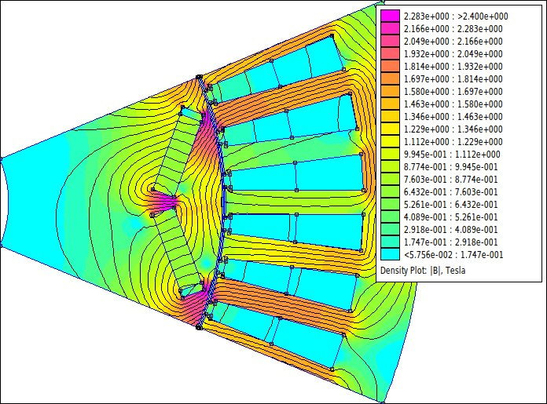
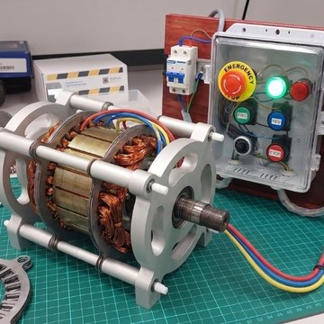
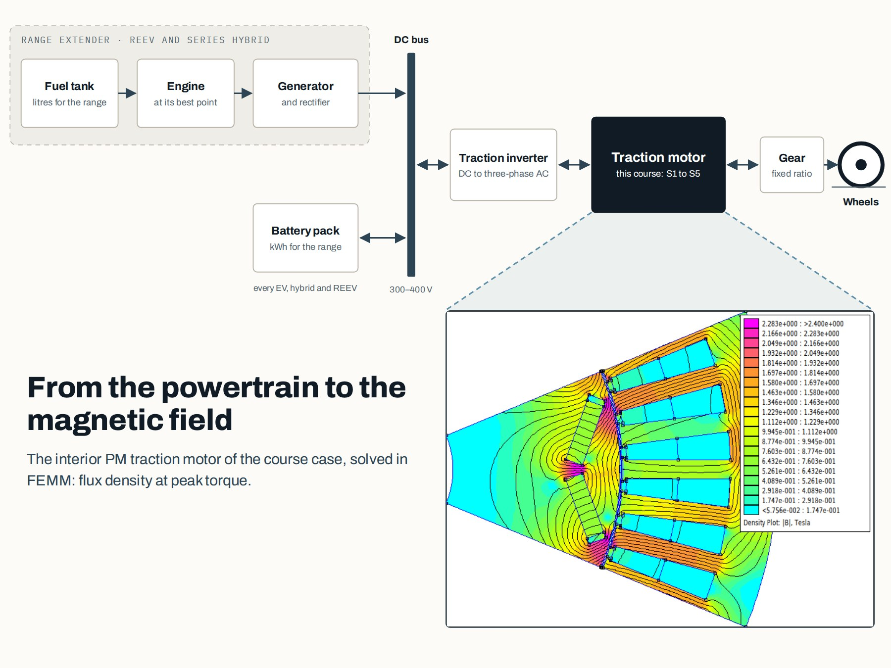
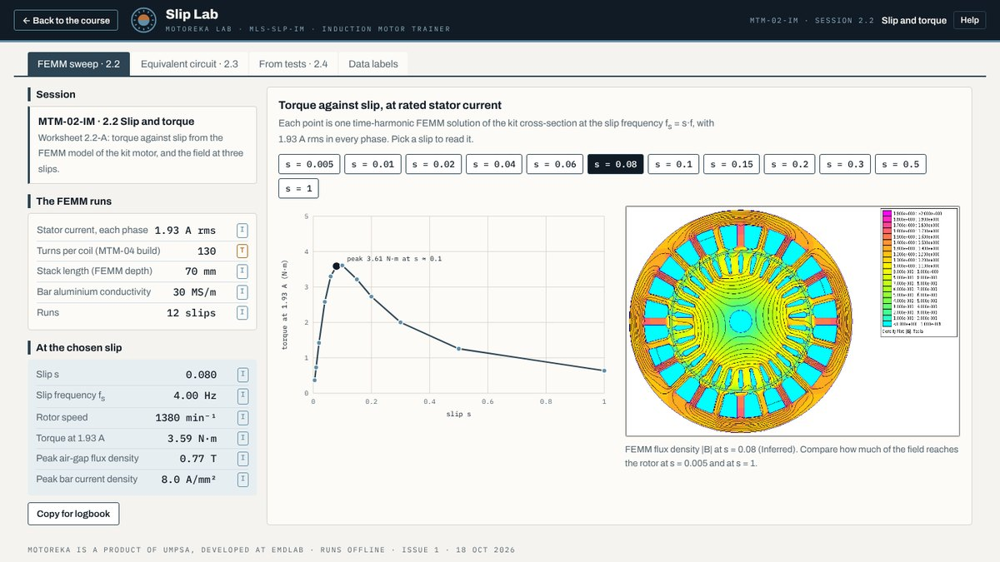
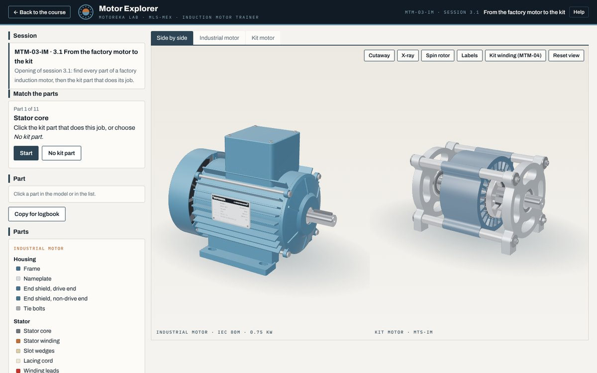
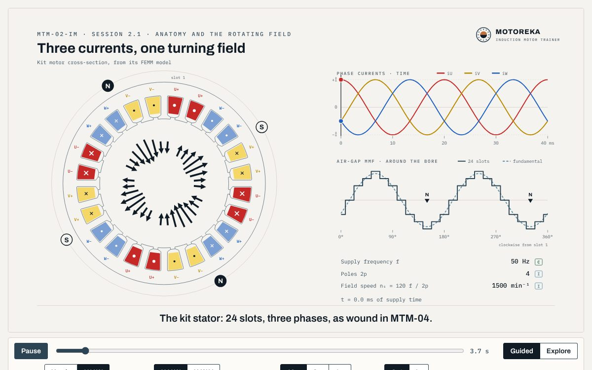
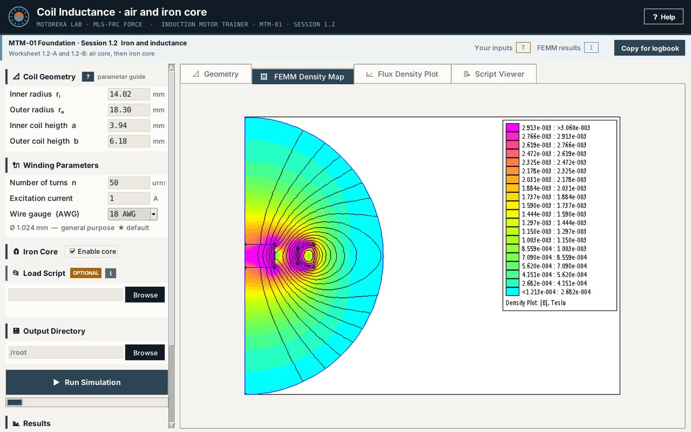
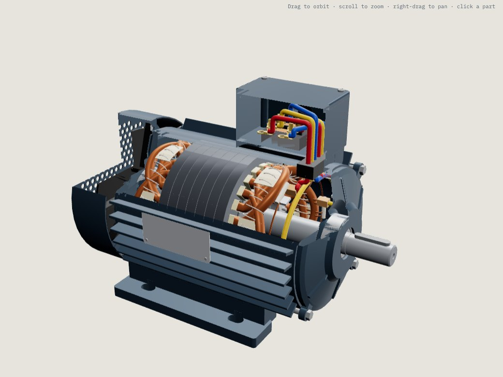

Topology Comparator
Screens eight motor topologies against your rating, with weights and scores you can edit, and shows whether the winner survives other weightings.
With the course and the book
Working tools from both learning paths. The free ones open without an account; each is step 2 of its path. The others come with the course or the kit. Pick the path you are here for.

Training 1 · For engineering teams01EV Traction MotorSize, choose and check an EV traction motor, from the vehicle brief to a check in FEMM. A course and a book.Free: the Sizing Calculator and the Hairpin Motor ViewerSee the EV tools
Training 2 · For TVET institutions02Induction Motor TrainerA hands-on training system: one induction motor, from FEMM models to a motor trainees build, run and measure.Free: Slip Lab, Motor Explorer, the scenes, Force and the viewerSee the trainer toolsSize, choose and check an EV traction motor, from the vehicle brief to a finite-element check in FEMM. A course for engineering teams and a companion book.

From vehicle data to the motor's rating and size, and a hairpin stator built step by step in 3D. Both open in your browser, with no sign-in.
The rest of the method uses five more tools. Each opens the design card the Sizing Calculator saves. They come with the course, and with the book. Click a screenshot to enlarge it.
Screens eight motor topologies against your rating, with weights and scores you can edit, and shows whether the winner survives other weightings.
Picks the electrical steel, magnet grade and winding, shows the losses and temperature margins, and estimates the material cost.
What the motor asks of the inverter and the cooling: current, fault behaviour, losses, hot spots, noise and rotor stress.
A Windows app that builds one pole of your motor in FEMM and reads its flux linkage, torque, voltage limit and ripple.
Opens up to four design cards side by side against the targets and a reference design, for the design review.
A hands-on training system: five modules follow one induction motor from FEMM models to a motor trainees build, wind, run and measure.
Apps and demos from the course hub, free in your browser, and Force for Windows. No account needed.

Induction Motor Trainer · FreeSlip LabLoad the kit motor and see slip, rotor current and torque change together.
Induction Motor Trainer · FreeMotor ExplorerTake a factory motor and the kit motor apart in 3D, part by part.
Induction Motor Trainer · FreeRotating field and slipTwo interactive scenes: three currents make one turning field, and the rotor always slips.
Induction Motor Trainer · FreeForceSeven FEMM demos of electromagnetism, for Windows. The installer sets up FEMM.
Induction Motor Trainer · FreeRound-Wire Motor ViewerThe kit stator and its round-wire winding in 3D, phase by phase.These apps need the kit or the sessions, so they come with the trainer; institutions that register as early adopters can try them with their team. The Drive Console follows with its module.
Electrical steel and core loss, cutting and stacking the core, the die-cast rotor cage, and the mechanical assembly with air gap and balance.
Winding design for the 24-slot stator: slots per pole per phase, coil pitch, phase belts and the IEC 60034-8 diagrams, in the browser.
Rewind the kit stator step by step in 3D: plan the coils and the former, wind each coil on the machine, insert, connect and test, then assemble and run the motor.
Tell us what you teach, build or need designed. We reply within one working day.